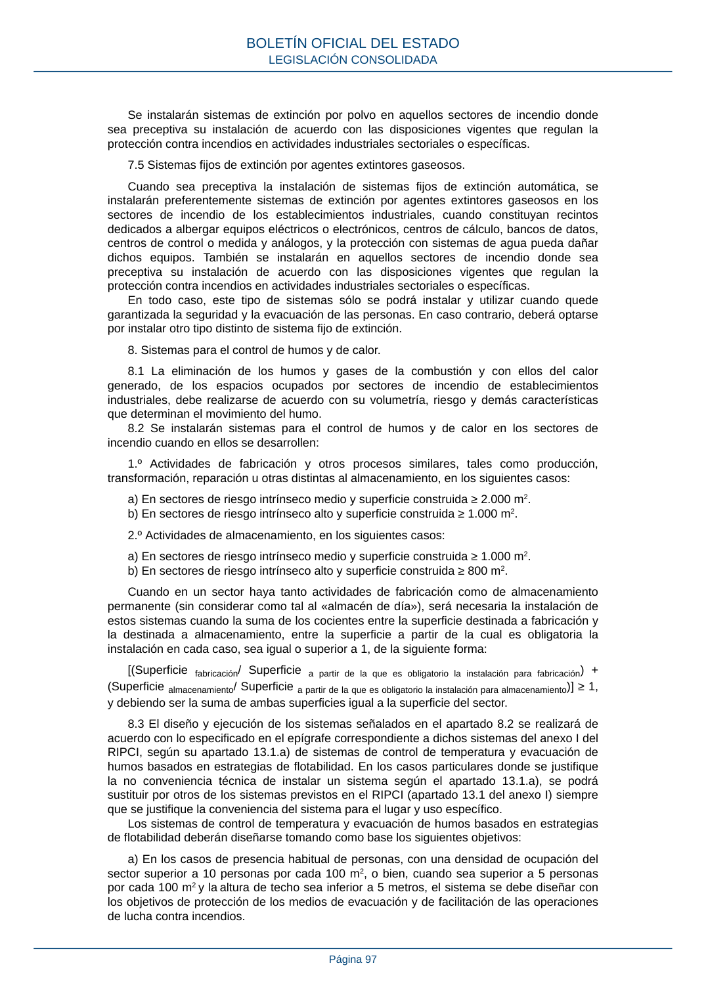

RSCIEI · Página 97 · versión 2025-04-10
SHA256: 85aa0af25d51e5b58d8975a4eefbf76d3f57a8933445cfe814ae9c4818a2e3e7 · página física 97 de 108 · métodos de encabezado
solo si están cotejados.
Formatos: Markdown · JSON de bloques · PDF p. 97 · imagen PNG
Se instalarán sistemas de extinción por polvo en aquellos sectores de incendio donde sea preceptiva su instalación de acuerdo con las disposiciones vigentes que regulan la protección contra incendios en actividades industriales sectoriales o específicas. 7.5 Sistemas fijos de extinción por agentes extintores gaseosos. Cuando sea preceptiva la instalación de sistemas fijos de extinción automática, se instalarán preferentemente sistemas de extinción por agentes extintores gaseosos en los sectores de incendio de los establecimientos industriales, cuando constituyan recintos dedicados a albergar equipos eléctricos o electrónicos, centros de cálculo, bancos de datos, centros de control o medida y análogos, y la protección con sistemas de agua pueda dañar dichos equipos. También se instalarán en aquellos sectores de incendio donde sea preceptiva su instalación de acuerdo con las disposiciones vigentes que regulan la protección contra incendios en actividades industriales sectoriales o específicas. En todo caso, este tipo de sistemas sólo se podrá instalar y utilizar cuando quede garantizada la seguridad y la evacuación de las personas. En caso contrario, deberá optarse por instalar otro tipo distinto de sistema fijo de extinción. 8. Sistemas para el control de humos y de calor. 8.1 La eliminación de los humos y gases de la combustión y con ellos del calor generado, de los espacios ocupados por sectores de incendio de establecimientos industriales, debe realizarse de acuerdo con su volumetría, riesgo y demás características que determinan el movimiento del humo. 8.2 Se instalarán sistemas para el control de humos y de calor en los sectores de incendio cuando en ellos se desarrollen: 1.º Actividades de fabricación y otros procesos similares, tales como producción, transformación, reparación u otras distintas al almacenamiento, en los siguientes casos: a) En sectores de riesgo intrínseco medio y superficie construida ≥ 2.000 m2. b) En sectores de riesgo intrínseco alto y superficie construida ≥ 1.000 m2. 2.º Actividades de almacenamiento, en los siguientes casos: a) En sectores de riesgo intrínseco medio y superficie construida ≥ 1.000 m2. b) En sectores de riesgo intrínseco alto y superficie construida ≥ 800 m2. Cuando en un sector haya tanto actividades de fabricación como de almacenamiento permanente (sin considerar como tal al «almacén de día»), será necesaria la instalación de estos sistemas cuando la suma de los cocientes entre la superficie destinada a fabricación y la destinada a almacenamiento, entre la superficie a partir de la cual es obligatoria la instalación en cada caso, sea igual o superior a 1, de la siguiente forma: [(Superficie fabricación/ Superficie a partir de la que es obligatorio la instalación para fabricación) + (Superficie almacenamiento/ Superficie a partir de la que es obligatorio la instalación para almacenamiento)] ≥ 1, y debiendo ser la suma de ambas superficies igual a la superficie del sector. 8.3 El diseño y ejecución de los sistemas señalados en el apartado 8.2 se realizará de acuerdo con lo especificado en el epígrafe correspondiente a dichos sistemas del anexo I del RIPCI, según su apartado 13.1.a) de sistemas de control de temperatura y evacuación de humos basados en estrategias de flotabilidad. En los casos particulares donde se justifique la no conveniencia técnica de instalar un sistema según el apartado 13.1.a), se podrá sustituir por otros de los sistemas previstos en el RIPCI (apartado 13.1 del anexo I) siempre que se justifique la conveniencia del sistema para el lugar y uso específico. Los sistemas de control de temperatura y evacuación de humos basados en estrategias de flotabilidad deberán diseñarse tomando como base los siguientes objetivos: a) En los casos de presencia habitual de personas, con una densidad de ocupación del sector superior a 10 personas por cada 100 m2, o bien, cuando sea superior a 5 personas por cada 100 m2 y la altura de techo sea inferior a 5 metros, el sistema se debe diseñar con los objetivos de protección de los medios de evacuación y de facilitación de las operaciones de lucha contra incendios. BOLETÍN OFICIAL DEL ESTADO LEGISLACIÓN CONSOLIDADA Página 97
